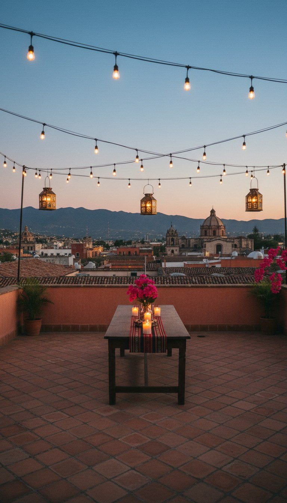

AI-generated concept home. Not a real property or product. It is not for sale or for rent. The products suggested below are real Amazon listings, chosen in the spirit of the house. The images on this page are AI-generated, not photographs of a real place.
Look straight up. There is a perfect square of deep blue sky, framed on all four sides by the tops of old plaster walls, indigo on one side, warm terracotta on the other. Magenta bougainvillea spills over the edges. Old wooden roof beams poke out under the eaves. The square turns slowly above you as you stand in the middle of it.
That square of sky is the whole idea of this house. Everything faces in, toward it.
Some links on this page are Amazon affiliate links. We may earn a commission at no extra cost to you.
As an Amazon Associate I earn from qualifying purchases.
Morning coffee by the fountain
Come down and walk out from under the arches. You’re in the central courtyard of a colonial house in the Mexican highlands, the kind you find in a hill town like San Miguel de Allende. Two storeys of stone arcades wrap around a square patio. The walls are deep indigo and warm terracotta plaster, with a weathered patina that only comes with time. Magenta bougainvillea climbs the columns. There are potted palms and ferns on a terracotta tile floor.
In the middle, a round carved-stone fountain with a basin of dark, still water, trickling softly. Sunlight shimmers on its surface. This is where the day starts: coffee on the fountain’s edge, the town still quiet outside the walls.

Courtyards like this are full of hand-painted pots. One cobalt talavera planter by a column brings the whole palette home.

COBAZUL talavera planter with drainage, cobalt blue, medium
A hand-painted Mexican ceramic pot, glazed inside and out, with a drainage hole and saucer.
View on AmazonShade under the arches all afternoon
The arcade is the house’s hallway, and it is open on one side. You walk along it with the arches on your right, opening to the sunny courtyard and the fountain, and an indigo wall on your left with a carved wooden bench. Punched-tin lanterns hang overhead. Worn terracotta tiles are cool underfoot. When the afternoon gets hot, this is where you’ll find everyone: in the shade, a few steps from the sun.
Dinner cooked with the doors wide open
The kitchen is hand-painted blue and white talavera tile, a long rustic wooden table with bowls of limes and avocados, clay pots, copper pans hanging, open shelves of pottery and a beamed ceiling. Tall double doors stand wide open to the bright courtyard, so whoever is cooking can see the fountain, and whoever is by the fountain can smell dinner.
A kitchen like this is built around a few good, heavy tools. The molcajete, a lava-stone mortar and pestle, is the oldest of them, and still the traditional way to make guacamole or a salsa.

Tradicion HUB 8-inch lava rock molcajete
A volcanic-stone mortar and pestle made in Puebla, Mexico, with a tortilla warmer; it needs curing before first use.
View on Amazon
Then, at the end of the day, you go up
A narrow stone staircase climbs along an indigo wall, past bougainvillea and terracotta pots on the steps, toward a square of glowing evening sky at the top. The reel slows here, and so does the music. You know something is waiting.
And the whole town glows below you
The roof terrace at dusk. A low terracotta parapet, string lights and punched-tin lanterns glowing, a long wooden table set with candles and a woven runner, potted bougainvillea. And beyond the parapet, a sea of terracotta rooftops and old church domes, the town’s lights coming on one by one, and the mountains behind turning pink, then violet.
Then blue hour. Outdoor sofas with linen cushions, the candlelit table, the lanterns, and the hill town’s lights spreading all the way to the dark mountains under a deep blue sky.

A metal lantern with a candle inside, set on the table or hung from the pergola, is the light of this terrace.

DECORKEY 11-inch metal candle lantern
Cut metal in an antique copper finish around amber glass panels, to hang or set on a table. For outdoor use only under a covered area.
View on AmazonNight falls on the courtyard
The last look is straight down, from the roof parapet into the courtyard at night: the arcades glowing with lantern light, the dark fountain reflecting it, the bougainvillea and the terracotta floor. From up here, it looks like a lit room with the sky for a ceiling, which, in a way, is exactly what it is.
Would you live here?
Of the five homes this week, this one might be the easiest to picture a whole life in: mornings by the fountain, afternoons under the arches, long dinners in the kitchen, and every evening on the roof above the town.
Tell us in the comments on the reel whether you’d move in, and which of the five dream homes this week is yours.
The images on this page and the reel’s visuals and voice are AI-generated. This is a concept home, not a real property.
The products above are our suggestions in the spirit of the house; they are not items shown in the reel. Product details: each linked Amazon.com listing, loaded 23 Nov 2026 (America/Toronto).